Unit 2 · Persepolis · Lesson 6
The Apadana: stairway reliefs, delegations and foundation tablets
Twenty-three peoples climb the stairs with gifts for the king. What can a carved procession tell us, and whose view of the empire does it show?
Year 11 Ancient History · Present with → or space · Read on a phone with R
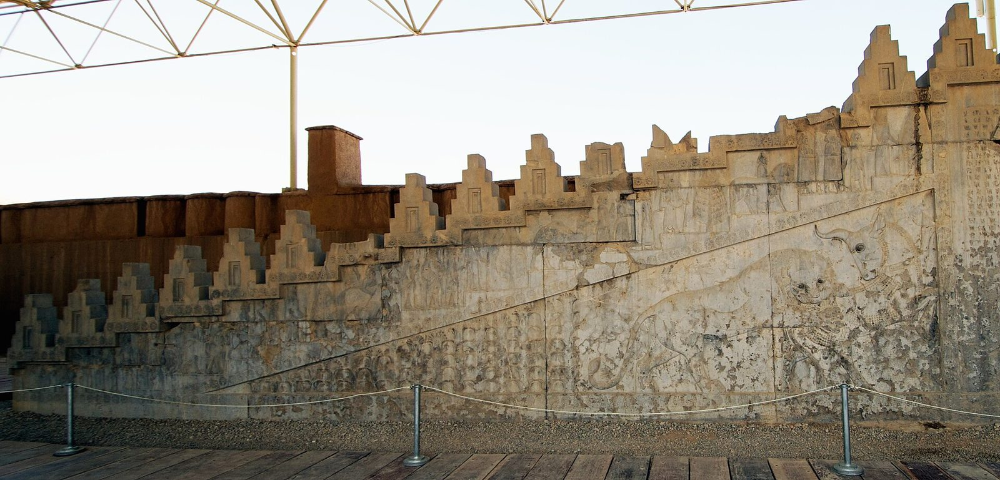
Connect · 3 minutes · everyone writes one line · press K for the timer
Name three zones of the terrace and one building in each
One line, from memory: three zones of the terrace, and one building in each. Use the precise names.
Which zone did a visiting delegation reach first, and why might that matter?
Ceremonial and audience (north): the Apadana, the Hall of a Hundred Columns, the Gate of All Nations · Royal residences (south): the Tachara, the Hadish · Storage and administration (south-east): the Treasury · Defence: the walls and towers, with the mountain behind.
The Apadana stands in the ceremonial zone. Visitors came up the great stairway, through the Gate, and climbed the Apadana’s own stairways to meet the king: today we read what they saw carved on those stairs.
Learning intentions and success criteria · 2 minutes
Today’s goals
- analyse the Apadana reliefs and foundation tablets as sources
- explain whose perspective the reliefs present
- describe what the stairway reliefs show and who made them
- explain what the reliefs are reliable for and what they are not
- write two analytical sentences about the reliefs
Syllabus outcomes: AH-11-03 explains the role and significance of forces, features, events, individuals and groups in shaping the past · AH-11-05 analyses different types of sources for evidence to support a historical account or argument · AH-11-06 explains differing interpretations and representations of the past · AH-11-07 communicates historical understanding, applying historical knowledge, terms and concepts. Life Skills: AH-LS-08 uses sources to form conclusions about the past · AH-LS-09 identifies different interpretations of the past.
Note-making · the same routine as always
How to structure your notes
questions and key terms, written after
short phrases, arrows (→ leads to), abbreviations (c. = about; BCE = before the Common Era)
- 1Rule up the page firstTitle, date, a cue column about a quarter of the page wide, room for a summary.
- 2Listen and look, then writeDon’t copy while a slide is being explained. Phrases, not sentences.
- 3Write your own notes at each ✎ checkpointThen compare with the model notes, one row at a time. Add what you missed in a second colour.
- 4Write the cue questions afterwardsUse exam verbs: explain, analyse, assess. To revise, cover your notes and answer the cues.
- 5Finish with a three-sentence summaryTwo checkpoints today: the Apadana, its reliefs and tablets · your OVPRL notes on the stairway relief.
Key vocabulary · add to the unit word wall
Words for today
| The hall and its stairways | Meaning |
|---|---|
| Apadana | The great columned audience hall of Persepolis, begun by Darius I. |
| Hypostyle hall | A hall whose roof is held up by many columns. |
| Capital (of a column) | The carved top of a column; at Persepolis, often two animal fronts back to back. |
| Relief | A carving that stands out from a flat stone background. |
| Usher | A court official who leads visitors in to the king. |
| Sources and debates | Meaning |
|---|---|
| Delegation | A group sent to represent a people or land — on the Apadana, 23 of them bring gifts. |
| Foundation tablet | An inscribed tablet buried in a building’s foundations, addressed to the gods and to future kings, not to visitors. |
| Trilingual inscription | An inscription written in three languages (at Persepolis usually Old Persian, Elamite and Babylonian). |
| Tribute | Payment in silver, gold or goods that a subject people made to the king. |
| Polychromy | The use of many colours, as on the originally painted reliefs. |
1 · Looking closely · I do — See – Think – Wonder · 3 minutes · press K for the timer
Look closely. What is happening here?
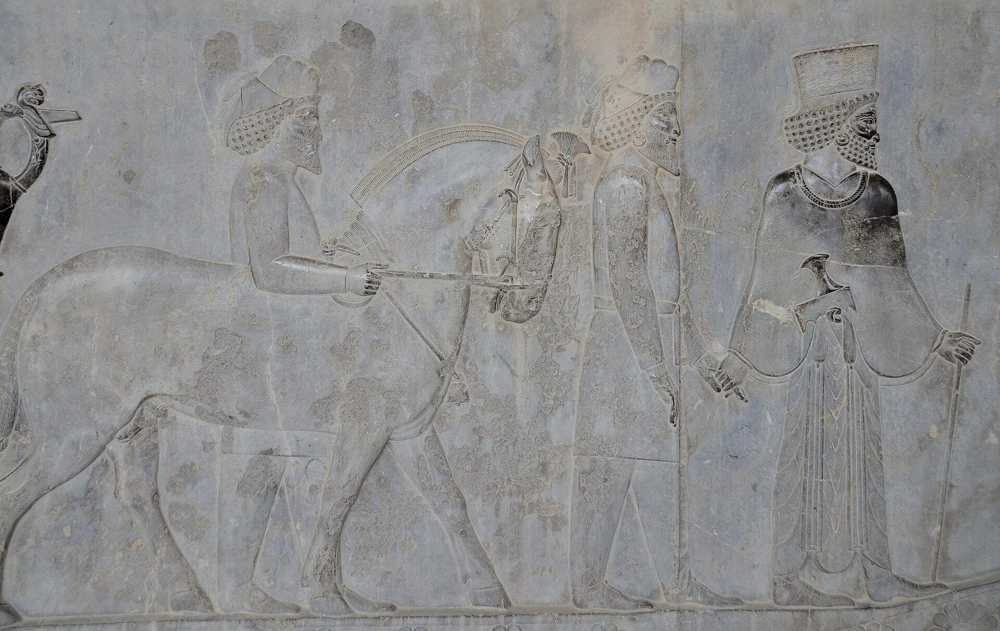
only what is really there
a man in a tall ridged hat and long robe, holding the hand of the man behind him · men in cloaks and soft caps · a horse with a decorated bridle · part of a pot with curved handles (far left)
what it might be, and how sure you are
a procession bringing gifts (fairly sure) · the front man guides the others in (fairly sure) · the others are foreigners: they dress differently from him (fairly sure) · the horse is a gift (guess)
questions you want answered
Who are they, and where are they from? · Who were the gifts for? · Did this procession ever really happen?
Images: Carole Raddato (CC BY-SA 2.0). Full details on the last slide.
1 · Looking closely · the reveal
One delegation of twenty-three, on the Apadana’s eastern stairway
- What: a carved stone relief, once painted, on the eastern stairway of the Apadana, the king’s audience hall at Persepolis
- When: carved in the late 6th to early 5th century BCE, probably for Darius I
- Who: a delegation usually identified as the Armenians, bringing a horse and a metal vessel; the man in front is an usher of the Persian court, leading the first visitor by the hand
- One of many: 23 delegations from across the empire climb the same stairway
No label names this delegation. So how can historians say who they are?
From their clothing, hair and gifts, compared with what other sources say about each land. That is detective work, so some identifications are surer than others (section 2).
1 · Looking closely · I do — the hall the stairways lead to
The Apadana: an audience hall of 72 columns
- 1An audience hallProbably where the king received visitors (that is how its stairway reliefs are usually read); begun by Darius I, finished under his son Xerxes.
- 272 columns36 in the hall (6 × 6) and 12 in each of three porticoes; about 20–24 metres high, holding a roof of wooden beams.
- 3Double-animal capitalsTwo bull (or lion) fronts back to back; the roof beams rested between the heads.
- 4Two carved stairwaysOn the north and east sides, both carved with the same procession.
1 · Looking closely · I do — how the eastern stairway is laid out
The eastern stairway: two processions meet at the centre
- 1South wing: the empire23 delegations in three rows, each led in by an usher, carrying gifts.
- 2North wing: the courtPersian and Median courtiers, guards, horses and chariots.
- 3The centre: the king, onceEach stairway’s centre once showed the king enthroned. Both panels were later moved to the Treasury, where Erich Schmidt’s excavation found them; no one knows why they were moved.
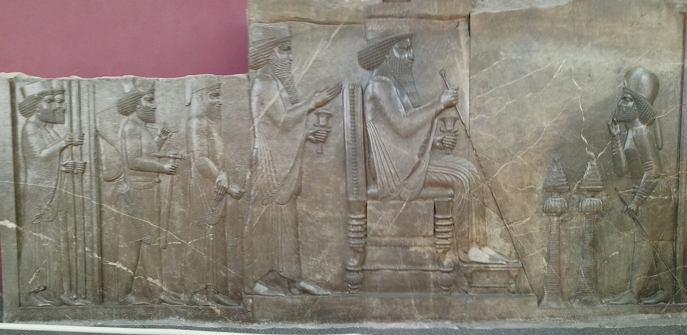
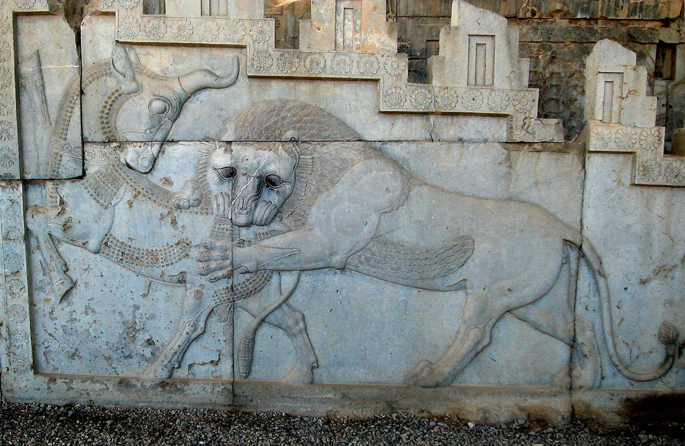
1 · Looking closely · I do — think aloud · use the OVPRL routine on page 2 of your booklet
OVPRL on the stairway relief: three decisions, thought aloud

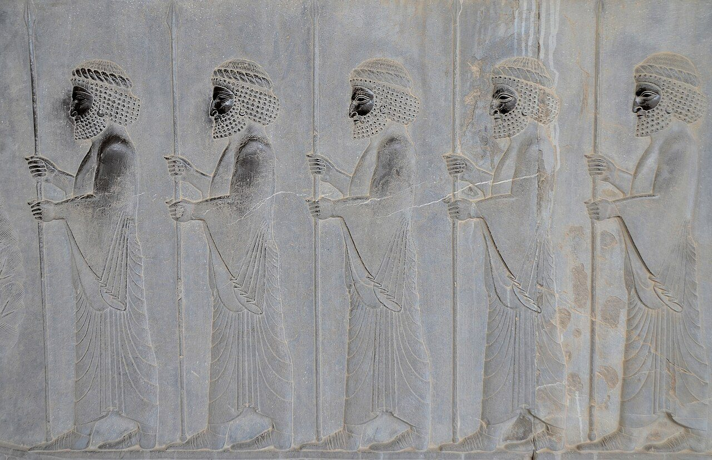
Who made it, why, and what is it reliable for?
Origin: who made it, when and where?
Carved for the king, probably Darius I, on the eastern stairway of his audience hall at Persepolis, late 6th to early 5th century BCE (the hall was finished under Xerxes) · stone, once painted · by the king’s sculptors, none named
Purpose: why was it made, and for whom?
Made for the king, to show the whole empire arriving in order: 23 peoples bring gifts, each led in by his ushers · seen by everyone who climbed the stairs to an audience
Reliability: how far can we trust it, and for what?
Reliable evidence of royal ideology (how the king wanted his empire seen), and of dress and goods (carved in detail) · less reliable as a record of one event: no date, no names, the same procession carved twice
Value and Limitations: your turn, in the You do.
2 · Delegation detectives · We do — supported reading · read it together
Buried under the hall: Darius’s gold and silver tablets
Darius the great king, king of kings, king of countries, son of Hystaspes, an Achaemenid. King Darius says: This is the kingdom which I hold, from the Sacae who are beyond Sogdia to Kush, and from Sind to Lydia – [this is] what Ahuramazda, the greatest of gods, bestowed upon me. May Ahuramazda protect me and my royal house!
Darius I, foundation tablets of the Apadana, late 6th century BCE · the same text in Old Persian, Elamite and Babylonian · translation as published by Livius.org · Sacae = nomad peoples of Central Asia · Sogdia = Central Asia · Kush = the Nile valley south of Egypt · Sind = the Indus valley
- Found: 1933, by Ernst Herzfeld’s expedition (his architect Friedrich Krefter)
- Where: under two corners of the hall, each in a stone box with one gold and one silver tablet
Why bury a gold tablet where no one would read it?
Its readers were the gods and future kings: buried in the foundations, it told them who built the hall and how far Darius ruled. A claim made for ever, not for visitors.
Which four lands does Darius name as the edges of his kingdom?
The Sacae beyond Sogdia (north-east), Kush (south-west), Sind (east), Lydia (west). Now look for them on the stairway.
2 · Delegation detectives · We do — pairs · 4 minutes · press K for the timer
Match each delegation to its land
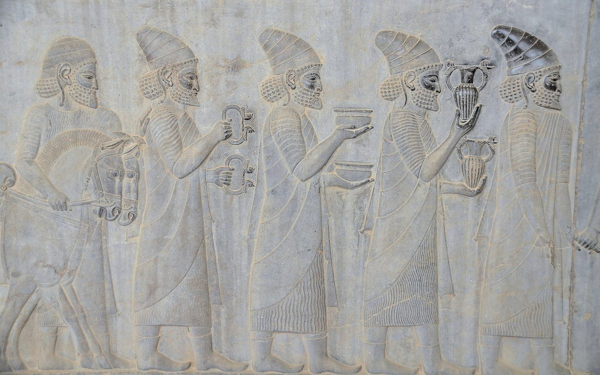
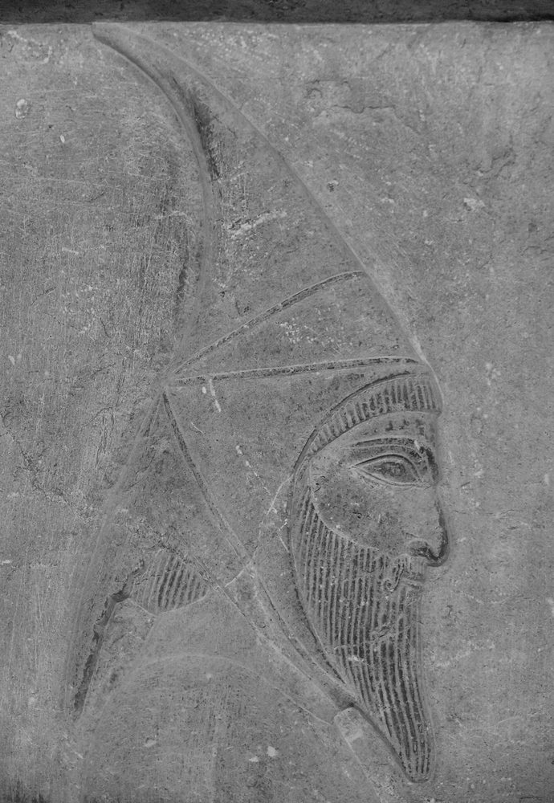
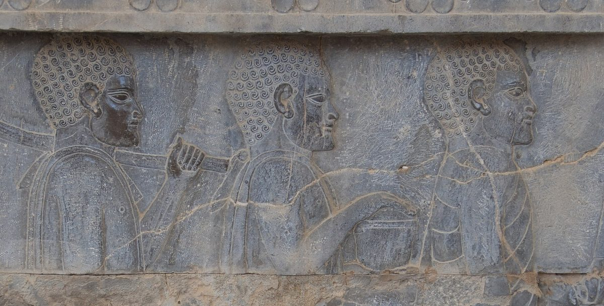
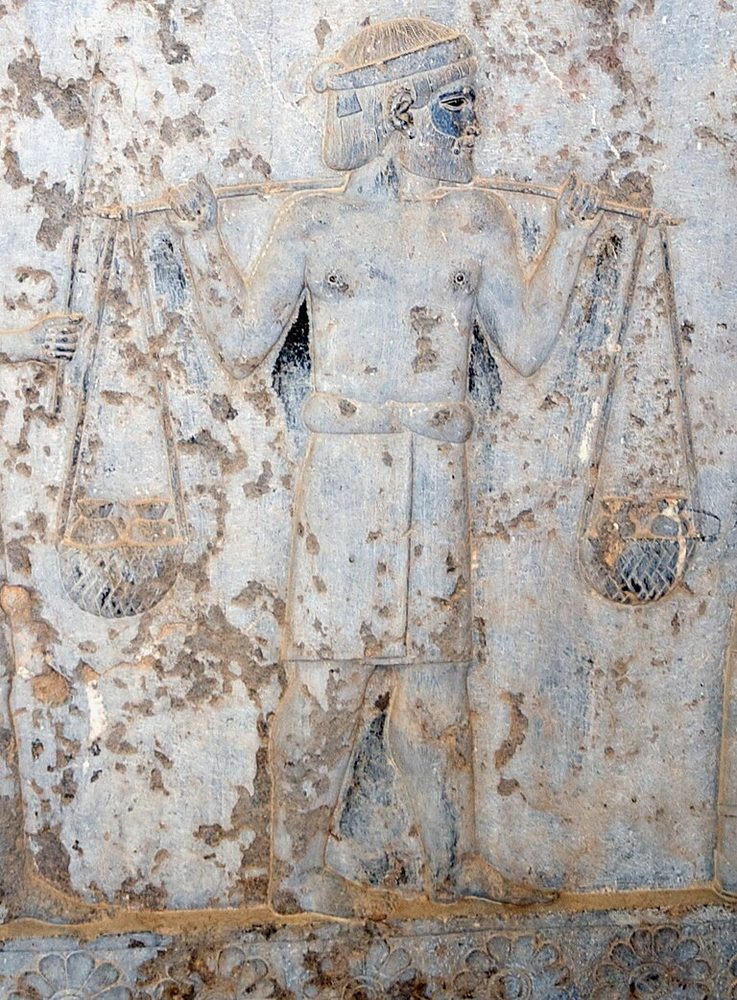
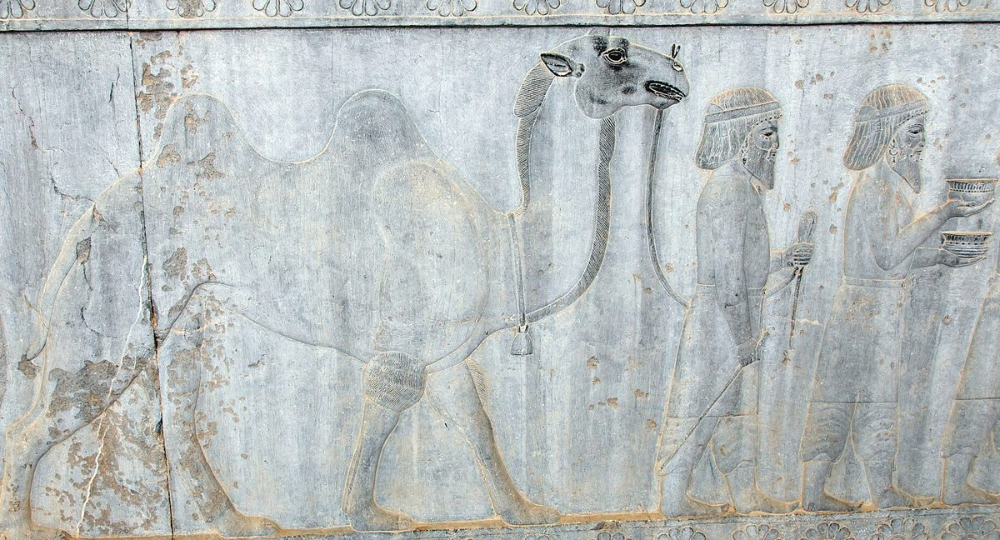
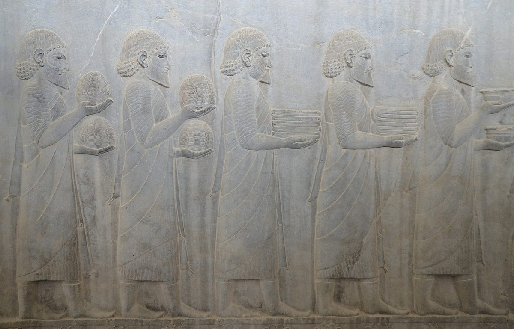
- Ionia (Yauna) Greek cities on the Aegean coast, Lydia’s neighbours
- ★ Kush south of Egypt; Herodotus says it sent gold, ebony and “twenty great elephants’ tusks”
- Bactria far north-east (northern Afghanistan): land of the two-humped camel
- ★ Lydia west (capital Sardis): rich, famous for gold and fine metalwork
- ★ Sind the Indus valley; Herodotus says the Indians paid “three hundred and sixty talents of gold dust”
- ★ the Sacae nomad horsemen of Central Asia; Darius’s tomb labels one figure “This is the Saca with the pointed hat”
1Clothing2Gifts3Clues4How sure? ✓ or ?
Images: Carole Raddato (CC BY-SA 2.0) · dynamosquito (CC BY-SA 2.0) · A. Davey (CC BY 2.0) · A. Davey (CC BY 2.0) · A. Davey (CC BY 2.0) · Carole Raddato (CC BY-SA 2.0). Full details on the last slide.
2 · Delegation detectives · We do — check your matches · cold call a pair before each row
Check your matches: how sure can we be?
| Card | Land | Clues that fit | How sure? |
|---|---|---|---|
| A | Lydia (perhaps) | metal vessels and armlets with griffin heads; horses (on the full relief they pull a chariot); tall hats | debated scholars split between Lydians and Syrians, and the Ionians dress much like them |
| B | the Sacae | the tall pointed hat, as on the labelled figure on Darius’s tomb | agreed |
| C | Kush | an elephant’s tusk and a bowl with a lid (on the full relief an okapi or giraffe follows); Herodotus’s tusks | agreed |
| D | Sind (India) | a yoke with two containers (probably gold dust: Livius; Herodotus’s gold) | agreed |
| E | Bactria (most likely) | a two-humped camel and bowls | debated four delegations bring this camel: experts look at small details of dress and hair |
| F | Ionia (most likely) | no tall hat; folded cloth, bowls and round bundles (wool? beehives?) | debated most scholars say Ionians, some say Lydians: the dress is like card A’s and the gifts are uncertain |
2 · Delegation detectives · We do — contestability · gesture vote at the end
Three questions experts still argue about
No delegation is labelled. The labelled figures on Darius’s tomb help, but several peoples bring the same gifts: four bring a two-humped camel. A 2021 study compared nine scholars, who agree on only about half of the 23 delegations, and still found “an ongoing identification problem among scholars”.
Herodotus says most lands paid a fixed tribute, but some, such as Kush and the Arabians, gave gifts instead. Modern writers use both words: ‘tribute bearers’ (Livius) or ‘gift-bearing delegations’ (Swart, 2021).
Livius thinks a gift-giving ceremony in the Apadana “is very likely”, and some link it to the New Year, but “there is no hard evidence for the date of its celebration”. Yet the king here is an idealised figure, and “the relief is a piece of art and not an account book” (Livius).
As for those on whom no tribute was laid, but who rendered gifts instead, they were, firstly, the Ethiopians nearest to Egypt … The Arabians rendered a thousand talents’ weight of frankincense yearly. Such were the gifts of these peoples to the king, besides the tribute.
Herodotus, Histories 3.97 · a Greek writer, about 430 BCE · A. D. Godley’s translation (Loeb, 1921), as revised by the Perseus Digital Library · ‘Ethiopians nearest to Egypt’ = the people of Kush
Gesture vote: “The stairway shows a real ceremony, exactly as it happened.” Thumbs up, down or sideways?
Partly. The peoples, clothes and kinds of gifts are real, but they are arranged as an ideal, timeless picture of the empire. It is strong evidence of how the king wanted the empire to be seen, and weak evidence of any one day.
Notes checkpoint 1 of 2
The Apadana, its reliefs and its tablets
Check for understanding · hinge question · hold up your A, B, C or D card on “3, 2, 1, show”
The Apadana reliefs are most reliable as evidence of …
- Ahow many people came to the king each year
- Bhow the king wanted the empire to be seen
- Chow much the gifts of each people were worth
- Dhow Darius really felt about his subject peoples
A is wrong: the reliefs give no numbers or dates, and the same procession is carved on both stairways. C is wrong: the gifts are symbols, not accounts: the relief is “a piece of art and not an account book”. D is wrong: the king is an idealised figure made for display, not a window into one man’s feelings.
3 · Your analysis · You do · 7 minutes · press K for the timer
OVPRL notes on the eastern stairway relief
- In your Cornell notes: all five OVPRL rows on the eastern stairway relief, following the OVPRL routine on page 2 of your booklet.
- Use today’s evidence: one delegation, the DPh tablets and Herodotus.
- Reliability row: “reliable for … but not for … because …”
Use the OVPRL prompt cards, one question at a time. Value: what can you see (clothes, gifts, ushers)? Limitations: whose voice is missing?
Add a Limitations point from Herodotus 3.97: what did Kush send that the relief does not show? Then try the Lachish comparison in Practice and review (“A procession of gifts, or a parade of captives?”).
Did you say what it is reliable for? Did you use one precise piece of evidence for each row?
Notes checkpoint 2 of 2 · compare with your own OVPRL notes
OVPRL on the eastern stairway relief
3 · Your analysis · Writing focus · 6 minutes · I do → We do → apply
Writing focus: building a ‘This Does That’ sentence
This (a precise detail) → does (a precise verb, not shows) → that (its effect or meaning) → extend with which may suggest that … and a hedge. From “The Apadana had 72 tall columns” to:
The Apadana’s seventy-two columns, about 20–24 metres high, present the hall as vast and overpowering, which may suggest that visitors were meant to feel small before the king.
A worked example, written for this lesson, on the hall itself (not the reliefs): this = the seventy-two columns · does = present … as · that = vast and overpowering · which may suggest = the hedged meaning.
Build a sentence on the hall’s double-animal capitals (two bull or lion fronts, back to back, with the roof beams resting between the heads): which detail exactly (this)? Which verb (does)? What effect (that)? Then extend it with a hedge.
The double-animal capitals, which carry the roof beams between the heads of bulls or lions, present the king’s hall as held up by powerful beasts, which may suggest that it was meant to look as strong as the animals that bore it.
Now turn to the stairway reliefs. Write your first ‘This Does That’ sentence on one detail of the reliefs: choose the detail and the verb before you write the sentence.
3 · Your analysis · You do · 10 minutes · press K for the timer
Analyse the reliefs in two ‘This Does That’ sentences
Verb analyse: “Identify components and the relationship between them. Draw out and relate implications.” (NESA, Glossary of key words) · Topic what the reliefs present about the empire · Limits the Apadana reliefs (and DPh) · Do two sentences, this → does → that, each with a hedge.
This (a precise detail) does (a precise verb) that (its effect or meaning), then extend with a hedge.
e.g. the Writing focus sentence on the hall (“The Apadana’s seventy-two columns present the hall as vast …”); now choose a detail of the reliefs.
“The [detail] [verb] the empire as …, which may suggest that …”
Combine two pieces of evidence in one sentence (a relief detail and the DPh tablets).
The orderly procession of delegations, each with a court usher leading its first delegate by the hand, presents the empire as harmonious and willingly obedient, which may suggest that Darius wanted his rule to appear accepted rather than imposed.
The carving of gifts from the edges of the empire, such as the elephant’s tusk from Kush and the gold from Sind, emphasises the vast reach of the king’s power, which is likely to have shown visitors in stone the same claim that Darius buried beneath the hall for the gods and future kings: a kingdom “from the Sacae who are beyond Sogdia to Kush”.
Finish your notes If time · or at home
Summary: three sentences
- What was the Apadana, and what do its stairways show?
- What do the foundation tablets claim, and what do experts still debate?
- What are the reliefs reliable for, and what are they not?
The Apadana was Darius I’s audience hall at Persepolis, finished under his son Xerxes, and its two stairways show the Persian court and 23 delegations bringing gifts to the king. Its gold and silver foundation tablets claim a kingdom “from the Sacae who are beyond Sogdia to Kush, and from Sind to Lydia”, but experts still debate who some delegations are, whether they brought tribute or gifts, and whether the scene records a real ceremony. Made for the king, the reliefs are reliable evidence of how he wanted his empire to be seen and of its peoples’ dress and goods, but weak evidence of any one real event.
Exit ticket · 6 minutes · before you leave
Finish the sentence
“The Apadana reliefs are reliable for … but not for … because …”
Reliable for how the king wanted his empire to be seen (orderly, willing, vast), or for the dress and goods of its peoples · not for one real event, or for what the subject peoples thought · because it was made for the king as royal display: no date, no names, an idealised scene.
Then check yourself against today’s three “I can” statements. Next lesson: the Hall of a Hundred Columns, wall reliefs and glazed brick: what survives?
Practice and review · 1 of 4 · true, false, justify
True or false? Justify your answer
- 1The Apadana’s roof was held up by 72 columns. True — 36 in the hall and 12 in each of three porticoes, about 20–24 metres high.
- 2Each delegation on the stairway is labelled with the name of its land. False — there are no labels; historians identify them by dress and gifts, and some are still debated.
- 3The DPh foundation tablets were written for visitors to the Apadana to read. False — they were buried under the hall, addressed to the gods and to future kings.
- 4The Audience reliefs were found in the place they were carved for. False — they were carved for the centres of the stairways, later moved to the Treasury, and found there by Schmidt’s excavation; no one knows why.
- 5Herodotus says every land in the empire paid a fixed tribute. False — some, such as the Ethiopians nearest Egypt and the Arabians, gave gifts instead; the Persians paid no taxes.
- 6The reliefs are good evidence of how the king wanted his empire to be seen. True — they were made for the king, to show the whole empire arriving in order with gifts.
Practice and review · 2 of 4 · writing
Write it as a historian: the foundation tablets
Write one ‘This Does That’ sentence about the DPh tablets, with a hedge (may, is likely to, probably).
The list of distant lands on tablets of gold and silver, buried where only the gods and future kings would find them, presents Darius as the ruler of a vast kingdom, from Central Asia to the Nile and from the Indus to Lydia, which may suggest that he cared as much about how gods and future kings would remember him as about how he was seen in his own lifetime.
Finish: “The DPh tablets are reliable for … but not for … because …”
The DPh tablets are reliable for the extent of the kingdom Darius claimed to rule and for how he wanted future kings to see him, but not, on their own, for how firmly he controlled those distant lands, because the text was written for the king to glorify his own rule.
Replace shows with a precise verb, add what it means, and hedge it: “Herodotus 3.97 shows the Ethiopians nearest Egypt bringing gifts.”
Herodotus 3.97 records that some lands, such as the Ethiopians nearest Egypt, gave gifts instead of a fixed tribute, which may suggest that the king did not demand the same from every people. (A model, written for this lesson: records suits a written source; which may suggest adds the hedged meaning.)
Practice and review · 3 of 4 · extension
A procession of gifts, or a parade of captives?
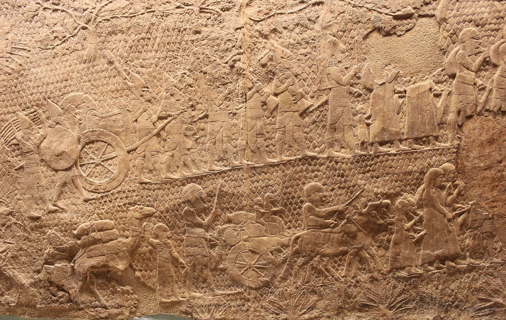
Compare the Apadana’s peaceful procession with this Assyrian relief of the capture of Lachish. What does the contrast suggest about Achaemenid royal ideology? Use modality, and say what the contrast cannot tell us.
Both reliefs show foreign peoples before a king, but they present empire in opposite ways. At Nineveh, Sennacherib’s sculptors carved the capture of Lachish in 701 BCE: Judean families leave their city as captives while Assyrian soldiers carry off its goods. At Persepolis, by contrast, twenty-three delegations climb the Apadana stairs in orderly rows, each led in by a court usher and carrying gifts. This contrast may suggest that Achaemenid royal ideology chose to present empire as willing cooperation rather than conquest, under a king whose kingdom, the DPh tablets claim, was “bestowed” on him by Ahuramazda. However, the contrast is more likely to reveal how each king wanted his rule to be seen than how subject peoples lived under it: Darius’s own Behistun relief shows bound captives standing before him, so Persian rule was also held by force.
Practice and review · 4 of 4 · cover your notes and answer from memory
Quick checks
- Describe the Apadana. Darius I’s audience hall at Persepolis, finished under Xerxes: 72 columns (36 in the hall, 12 in each of three porticoes), about 20–24 metres high, with double-animal capitals and two carved stairways.
- Explain what the eastern stairway reliefs show. On one wing, Persian and Median courtiers and guards; on the other, 23 delegations bringing gifts, each led in by an usher; a lion attacking a bull; the centre once showed the king enthroned.
- What happened to the Audience reliefs? They were moved in ancient times from the stairways to the Treasury, for reasons no one knows; Schmidt’s excavation found them there. One is now in the National Museum of Iran.
- What does DPh claim, and who was it written for? A kingdom “from the Sacae who are beyond Sogdia to Kush, and from Sind to Lydia”, given by Ahuramazda; buried under the hall for the gods and future kings, not visitors.
- Explain why historians disagree about some delegations. No delegation is labelled; they are identified by dress and gifts, and several bring the same gifts (four bring a two-humped camel).
- Assess what the reliefs are reliable for. How the king wanted his empire to be seen, and its peoples’ dress and goods; not any one real event, or the subject peoples’ own views.
Sources and credits
Where everything comes from
Darius I, the Apadana foundation tablets (DPh): translation as published by Livius.org (© Livius.org; quoted briefly for teaching). Labels on Darius’s tomb (DNe): Livius.org.
Herodotus, Histories 3.94 and 3.97: A. D. Godley’s Loeb translation (Vol. II, 1921), in the revised version published by the Perseus Digital Library (CC BY-SA 3.0 US). Godley’s printed wording differs in places (at 3.97 he has ‘pure gold’ and ‘every third year’).
Facts and short quotations: Livius.org (J. Lendering), “Persepolis, Apadana”, “… East Stairs”, “… North Stairs”, “… North Stairs, Central Relief” and “… Treasury” (© Livius.org); A. Swart, The Apadana reliefs at Persepolis (PhD thesis, Stellenbosch University, 2021), abstract; A. Zournatzi, “The Apadana coin hoards, Darius I, and the West”, American Journal of Numismatics 15 (2003), and her record “The Apadāna coins”, Iranohellenica (National Hellenic Research Foundation); E. F. Schmidt, The Treasury of Persepolis (Chicago, 1939).
Outcomes and content: NSW Education Standards Authority (NESA), Ancient History 11–12 Syllabus (2024). © NESA.
The two diagrams were drawn for this lesson (simplified, not to scale).
Also cited in the lesson notes: Encyclopaedia Iranica; Encyclopaedia Britannica, “Iranian art: architecture”; the Oxford Cabinet, “The Apadana at Persepolis”; World History Encyclopedia; NSW Department of Education, Persepolis teaching support resource.
Teacher resource: Imperial Narratives in Stone: Wall Reliefs of Persepolis (class notebook).
- The Apadana’s eastern stairway, Persepolis · Photo: A. Davey · CC BY 2.0 · source
- A carved stone relief from Persepolis, late 6th to early 5th century BCE · Photo: Carole Raddato · CC BY-SA 2.0 · source
- The Audience relief from the Apadana (National Museum of Iran) · Photo: Arashk rp2 · CC BY-SA 4.0 · source
- A lion attacking a bull, stairway relief, Persepolis · Photo: Yong Woo Park · CC BY 4.0 · source
- Delegations on the Apadana’s eastern stairway (southern wing) · Photo: Diego Delso · CC BY-SA 4.0 · source
- Guards on the north wing of the Apadana’s eastern stairway · Photo: Carole Raddato · CC BY-SA 2.0 · source
- Delegation card A, Apadana eastern stairway · Photo: Carole Raddato · CC BY-SA 2.0 · source
- Delegation card B, Apadana eastern stairway · Photo: dynamosquito · CC BY-SA 2.0 · source
- Delegation card C, Apadana eastern stairway · Photo: A. Davey · CC BY 2.0 · source
- Delegation card D, Apadana eastern stairway · Photo: A. Davey · CC BY 2.0 · source
- Delegation card E, Apadana eastern stairway · Photo: A. Davey · CC BY 2.0 · source
- Delegation card F, Apadana eastern stairway · Photo: Carole Raddato · CC BY-SA 2.0 · source
- Lachish relief: booty and captives (British Museum) · Photo: Zunkir · CC BY-SA 4.0 · source
.jpg){kind=link}
.jpg){kind=link}
-and-Median-Commander-Simin-Ancient-Iran-Muesem-Full.jpg){kind=link}


.jpg){kind=link}
.jpg){kind=link}
.jpg){kind=link}
_(4685803510).jpg){kind=link}
_(4688525278).jpg){kind=link}
_(4687986033).jpg){kind=link}
.jpg){kind=link}

All images are public domain or openly licensed, and were resized for the web (some were also cropped). Each is shared under the licence shown.